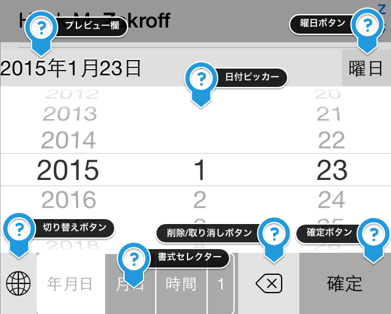
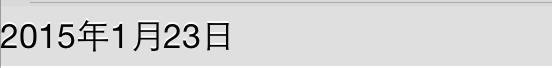
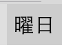
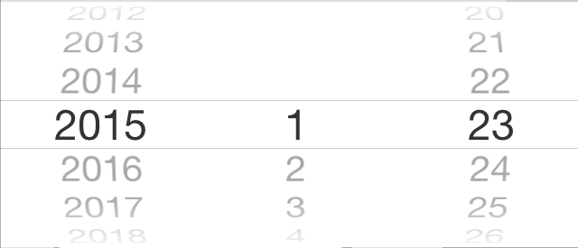
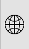
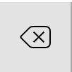

入力される日付のプレビューが表示されています。ここで、自分の入力したい日付とあっているか、確認してください。

日付の末尾に、曜日を追加することができるボタンです。一度押すと、曜日が追加され、もう一度押すと曜日が削除されます。

ここから日付を選択することができます。日付を選択する際は、プレビュー画面と照らし合わせて、自分の選択した日付があっているか確認してください。

次のキーボードへ切り替えることができます。日付キーボードを使い終わったら、このボタンを押してください。
入力する日付の書式を選択できます。「1」という項目は、数字を入力することができるキーボードを表示します。日付の微調整などにお使いください。

通常は1文字づつ削除することができるボタンです。日付を入力した直後に限り、日付を丸ごと削除することができます。
現在プレビュー欄に表示されている日付を、実際に入力するボタンです。最後に押してください。